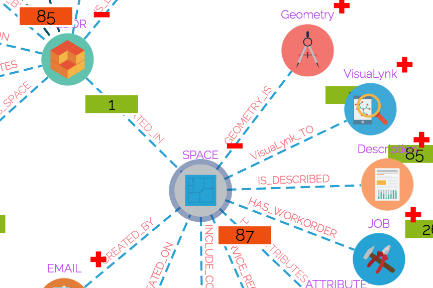
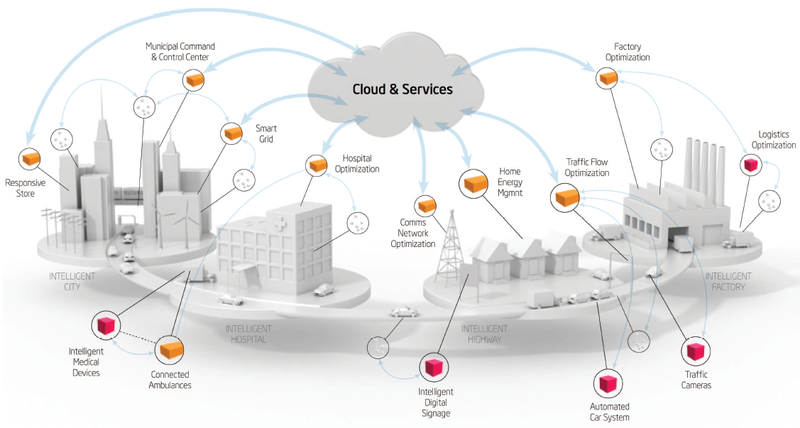
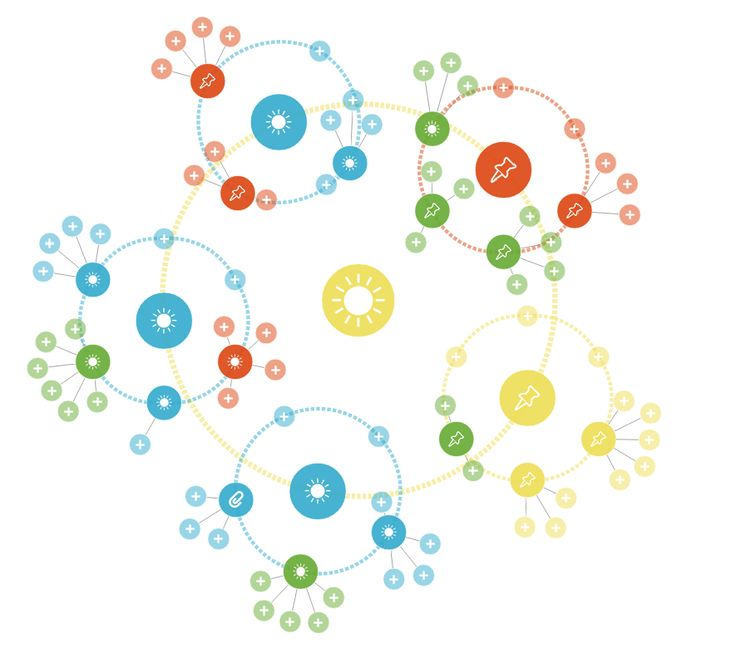

DATA DEPENDENCIES
The deep meaning of your fragmented building information is hidden behind the invisible dependencies. Instead of storing data in siloed manner, VisuaLynk focuses on the relationships between each information entity. The explicitly represented relationships will allow you easily navigate in your data store and find the specific information that you are looking for.
EASILY SCALABLE
Your business, your way! VisuaLynk's powerfull and easy-to-customize modules provides a flexible platform for the dynamic nature of your tasks, use-cases and business decisions. VisuaLynk does not force you to change your existing infrastructure and way of work. Instead, it integrates and expands them with each other.
SEMANTIC LINKS
Each of your data entities are automatically linked with each other on-fly. VisuaLynk's revolutionary Semantic Linked Data technology makes your fragmented data a click away with interactive links on www. Based on your business domain, VisuaLynk offers semantic graphs to serve a baseline data model for further customization to cater your industry specific needs.
2D/3D MODEL INTEGRATION
Your building models are more intelligent with VisuaLynk's built-in interactive model viewers. Dynamically integrated 2D and 3D models building models will be an easy path to access semantic building information and it's explicit relationships.
VISUAL QUERY
Only text and numbers? Not anymore with VisuaLynk. Each information entity is represented with an easy-to-remember/recall visual icon. These icons are also linked with their explicit relationships. You don't need to shift between spreadsheets anymore. With VisuaLynk's built-in visual query system, related information will be on your screen with one click.
ARTIFICIAL INTELLIGENCE
Machine Learning assisted data capture, mapping and analytic techniques provides intelligent assistance for your decision making process. With the semantic mapping and linking of your fragmented data, VisuaLynk offers efficient business solutions for our customers.